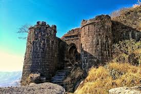

Sinhagad Fort

- Sinhagad is a hill fortress located at around 35 km southwest of Pune.
- It has been the site of many important battles, most notably the Battle of Sinhagad in 1670.
- The fort is located on a cliff and is now a popular trekking destination, offering breathtaking views of the surrounding region.